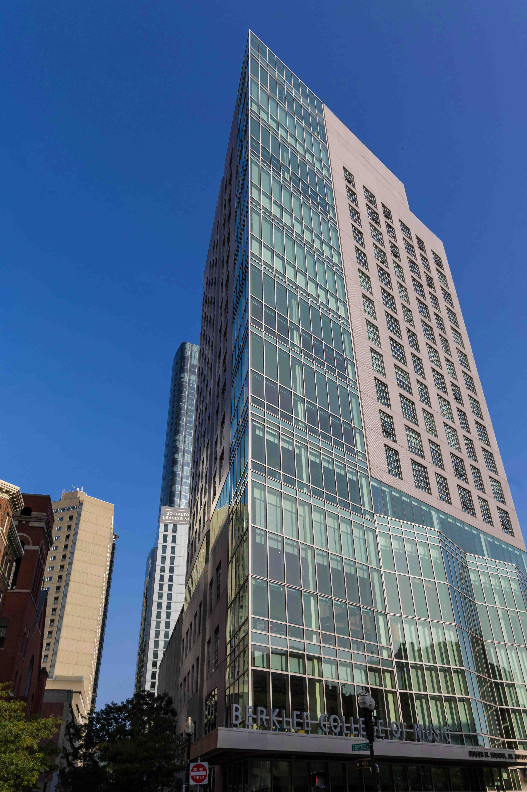

Computer Science (Optional/Introductory)
Foundations of Computing: Your Gateway to the Digital WorldThis introductory course in computer science is designed to provide students from all backgrounds with a basic yet thorough understanding of computing principles. Aimed primarily at beginners or students from non-technical disciplines, the course introduces the fundamentals of computers, algorithms, data representation, and programming concepts using user-friendly platforms and visual programming tools. The goal is to nurture computational thinking and problem-solving skills early on, setting a strong foundation for further studies or real-world application. Whether you're considering a future in tech or just want to build essential digital literacy, this module offers an accessible and engaging starting point.
English Language & Communication Skills
Mastering Communication: Essential Skills for SuccessThis course is a vital component of every student's academic and professional journey. It is designed to refine verbal and written communication skills in English, with a focus on practical usage, public speaking, group discussions, professional writing, and comprehension. Students will gain confidence in expressing themselves clearly and persuasively in academic and workplace settings. The program also integrates training in interpersonal communication, presentation techniques, and listening skills—making graduates well-rounded communicators, ready to succeed in a global and multilingual professional world.
Computer Science and Engineering (CSE)
Innovating the Future: Computer Science and EngineeringThe CSE program equips students with a rigorous understanding of the theory and application of computing systems. Spanning subjects like data structures, algorithms, databases, operating systems, computer networks, and software development, this program integrates both hardware and software components of modern computing. In addition to technical skills, students are introduced to emerging areas such as artificial intelligence, cybersecurity, and blockchain. Practical labs, coding challenges, hackathons, and capstone projects ensure real-world experience. Graduates are well-prepared for roles in software engineering, systems design, data analysis, research, and innovation-driven startups.
Civil Engineering
Building Tomorrow: Civil Engineering ExcellenceCivil Engineering is a cornerstone of societal development, and this program provides students with the expertise needed to plan, design, and maintain vital infrastructure. It covers structural analysis, environmental engineering, transportation systems, geotechnical methods, and construction management. Students learn through hands-on labs, fieldwork, and projects that mimic real-world construction challenges. With a strong emphasis on sustainability and smart city development, the program nurtures engineers who can tackle modern-day infrastructure needs while ensuring minimal environmental impact. Graduates can pursue careers in public infrastructure, private construction, environmental consultancy, and research.
Business Administration (BBA)
Leading with Vision: Bachelor of Business AdministrationOur BBA program prepares students for the dynamic and competitive world of business. With a curriculum rooted in core management disciplines such as finance, marketing, human resources, operations, and entrepreneurship, students develop a strategic mindset and leadership skills. The program also includes business simulations, case studies, industry projects, and internships that bridge the gap between theory and practice. Soft skills development, ethics, and global business awareness are integrated throughout. Graduates emerge as confident, adaptable, and well-rounded professionals, ready to take on roles in corporate leadership, startups, consulting, or further management studies.
Applied Sciences (Physics, Chemistry, and Mathematics)
Exploring the Sciences: Physics, Chemistry, and MathematicsThis foundational department supports all technical disciplines by fostering scientific understanding and analytical skills. The physics curriculum explores mechanics, optics, thermodynamics, and quantum theory, while chemistry covers organic, inorganic, and physical chemistry with an emphasis on lab work and real-world application. The mathematics section focuses on calculus, linear algebra, differential equations, and statistics—tools critical for modeling and problem-solving. Interdisciplinary in nature, this division underpins engineering education and research, ensuring students acquire a strong conceptual grasp of natural laws and mathematical techniques that govern engineering and technology.
M.Tech in Computer Science and Engineering
Advancing Expertise: M.Tech in Computer Science and EngineeringThis postgraduate program builds on undergraduate CSE foundations to offer advanced technical and theoretical knowledge in computer science. Key focus areas include high-performance computing, distributed systems, data analytics, software architecture, cryptography, and algorithm optimization. Students gain practical experience through projects, research initiatives, and industrial collaboration. The curriculum is tailored for students seeking specialized roles in R&D, system architecture, academia, or technology leadership. It encourages innovation and the development of new technologies, while also preparing students for doctoral research or entrepreneurial ventures in the IT sector.
M.Sc. in Data Science
Harnessing Data: M.Sc. in Data Science Data is the new oil, and the M.Sc. in Data Science trains students to refine and utilize it effectively. This interdisciplinary program combines statistics, computer science, and domain knowledge to teach data mining, machine learning, big data technologies, data visualization, and predictive modeling. Emphasis is placed on practical skills, using tools like Python, R, SQL, and cloud computing platforms. Students work on real-world datasets and capstone projects in collaboration with industry, enabling them to derive insights and make data-driven decisions. The program opens doors to careers in data analysis, business intelligence, finance, healthcare, and artificial intelligence.
M.Tech in Artificial Intelligence and Machine Learning
Pioneering Intelligence: M.Tech in AI and Machine LearningThis cutting-edge program offers deep expertise in the design and development of AI systems and intelligent algorithms. It covers deep learning, natural language processing, reinforcement learning, computer vision, and AI ethics. Students engage in research and applied projects, exploring how machines can mimic human cognition and decision-making. The curriculum includes hands-on training in TensorFlow, PyTorch, and cloud-based AI platforms. Designed for future researchers, data scientists, and AI engineers, the program prepares students to work in frontier industries like robotics, autonomous systems, FinTech, and healthcare AI.
M.Tech in Mechanical Engineering
Engineering Innovation: M.Tech in Mechanical Engineering
The M.Tech in Mechanical Engineering provides advanced instruction in mechanical systems, thermal sciences, fluid mechanics, robotics, and manufacturing processes. Students explore modern topics such as additive manufacturing, renewable energy systems, mechatronics, and computational mechanics. With an emphasis on innovation and design, the program encourages research and practical problem-solving through lab work and industrial internships. Graduates are prepared to lead in sectors such as automotive, aerospace, defense, energy, and automation, as well as pursue doctoral-level study or entrepreneurship in advanced mechanical technologies.
M.Sc. in Applied Physics/Chemistry/Mathematics
Scientific Exploration: M.Sc. in Applied SciencesThis specialized master's program deepens knowledge in one of three core scientific disciplines—Applied Physics, Applied Chemistry, or Applied Mathematics. Each track offers rigorous theoretical study along with hands-on research and experimentation. Applied Physics may focus on optics, materials science, or nanotechnology; Chemistry may explore environmental chemistry, polymers, or bio-inorganic systems; and Mathematics may involve numerical methods, mathematical modeling, or cryptography. Graduates are equipped for research, teaching, industrial roles, or Ph.D. study, contributing to innovation in science, engineering, and technology.